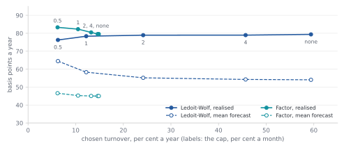

Stock-level index tracking: a point-in-time benchmark, a long-only mandate and its attribution by sector
Abstract
Tracking a stock index needs the benchmark as it stood each month and a forecast of tracking error. I rebuild the S&P 500 from CRSP's list of members from 1926 to 2024, and the rebuilt benchmark tracks CRSP's return of the same list within 11.5 basis points a year. On it, a long-only mandate with bounds per stock and sector, a turnover cap, a tilt away from Energy and Utilities, exclusions and a beta of one realises 78.9 to 83.6 basis points a year of tracking error from 1999 to 2024 under four covariance estimators. Every estimator's forecast underestimates it, the realised active return being 48 to 85 per cent more volatile than forecast. Index changes require 11 per cent of the turnover. Sector weights move the active return more than the stocks held within sectors, and no mean active return is statistically significant at the 5 per cent level.
Terms
- Universe
- the stocks on CRSP's list of S&P 500 members on the last trading day of the month before.
- Benchmark
- the universe weighted by market capitalisation, i.e., price times shares outstanding at the end of the month before.
- Active weight
- a stock's weight in the portfolio minus its weight in the benchmark.
- Active return
- the portfolio's return minus the benchmark's.
- Basis point
- a hundredth of a percentage point.
- Tracking error
- the standard deviation of the monthly active return, times the square root of 12. It is forecast before the month from the covariance estimate and realised after it.
- Covariance estimator
- a method that turns three years of daily returns into a covariance matrix of the stocks. Section 2.3 sets out the four this note compares.
- Condition number
- the largest eigenvalue of a covariance matrix divided by its smallest. It is large when some combination of the stocks appears to have almost no variance.
- Bias statistic
- the standard deviation of each month's active return divided by that month's forecast. It is 1 for an accurate forecast and above 1 when the forecast is too low.
- Band
- the range of the bias statistic within which a forecast counts as accurate, 0.8 to 1.25.
- Mandate
- the full set of constraints the portfolio obeys, set out in Section 2.4.
- Tilt
- every Energy and Utilities stock held at no more than half its benchmark weight.
- Path
- one covariance estimator under one set of constraints and one turnover cap, run month by month from the benchmark.
- Forced turnover
- the trading that index changes require. Chosen turnover is the rest, and the turnover cap limits only chosen turnover.
- Paired test
- the variance test of Ledoit and Wolf (2011) of whether two paths, measured on the same months, have the same tracking error. The detectable difference is the difference the test would find statistically significant at the 5 per cent level four times in five.
- Holm's correction
- an adjustment of p-values for the number of comparisons read together (Holm, 1979).
- Newey-West standard error
- a standard error of a mean that allows each month to be correlated with the next twelve (Newey and West, 1987).
- Allocation, selection and interaction
- the three terms into which the method of Brinson and Fachler (1985) splits the active return by sector, set out in Section 2.5.
- Factor
- one of the six return series the factor model and the factor attribution use, i.e., the five factors of Fama and French (2015) and momentum, as French publishes them.
- Residual
- the part of the active return the six factors do not explain.
- Gate
- a test of the data, fixed before the code ran, that stops the study if it is not met. An expectation is a test of a result, fixed before the code ran and reported whether it is met or not.
1. Introduction
An index-tracking mandate is judged by how far its portfolio strays from a cap-weighted benchmark, and the manager states that distance in advance as a forecast tracking error, computed from a covariance estimate of the benchmark's stocks. The forecast rests on an estimate, and with about 500 stocks on about 755 days of returns the sample covariance is poorly conditioned, i.e., some combinations of stocks appear to have almost no variance, so an optimiser that minimises the forecast is drawn towards the estimate's errors (Ledoit and Wolf, 2004). Estimation error is what an optimised portfolio pays for out of sample (DeMiguel, Garlappi and Uppal, 2009), and the client's constraints, i.e., bounds on single names and sectors, a cap on turnover, exclusions and tilts, decide how much the optimiser can act on it. The question this note asks is therefore a practical one, i.e., how close the portfolio stays to the benchmark under such a mandate, how well each of four common covariance estimators forecasts the distance it realises, what the turnover is made of, and where the active return comes from by sector.
The closest evidence comes from a companion study, Optimal versus naive diversification (Hofer, 2026), which runs a mandate of the same design on Kenneth R. French's 49 industry portfolios and finds the realised active return 22 to 61 per cent more volatile than its estimators forecast. But an industry portfolio does not behave like a stock in four ways a mandate depends on: industries do not enter or leave the benchmark, are never delisted, carry no single-name concentration and sit in no GICS sector. And the bias statistics of that study's estimators from daily returns lie between 0.98 and 1.15 in every decade from 2000, inside the band this note uses, so their underestimate over the whole window comes from the years before 2000. The industry evidence therefore leaves open whether such a forecast underestimates the tracking error of a mandate run on stocks since 2000, and where that mandate's active return comes from by sector. At the stock level the benchmark itself has to be built: the list of members as it stood at each date, their capitalisations at the start of each month, their returns with the returns of delisted stocks applied (Shumway, 1997), and their sectors as classified at the time.
This note builds that benchmark and runs the mandate on it. I take the members of the S&P 500 from CRSP's list, month by month from January 1926 to December 2024, weight each by its market capitalisation at the start of the month, and check the result in three ways, against CRSP's own value-weighted return of the same list, against CRSP's count of members and their total value, and against French's large-cap portfolios sorted on momentum and on variance. From July 1999, when Compustat's history of GICS sectors begins, a long-only optimiser minimises the forecast tracking error each month under the mandate's constraints with each of four covariance estimators. Each path's turnover is split into what index changes require and what the optimiser chooses, and its active return is attributed by sector with the method of Brinson and Fachler (1985) and by the five factors of Fama and French (2015) and momentum. The study measures the mandate's tracking error, its forecast and its sources, and estimates no return the mandate earns, since a portfolio built to minimise its tracking error is not built to earn one.
The S&P 500 from 1999 to 2024 is well suited to test this question, for three reasons. First, CRSP's list dates each membership by day, so the benchmark can be rebuilt from what was known when each month began, and CRSP's own index file provides a return to check it against. Second, the window holds the fall of 2000 to 2002, the financial crisis of 2008 and the shock of 2020, i.e., months in which volatilities and correlations moved far from their values over the three years before, which is where a forecast drawn from those three years is most likely to miss. Third, from 2014 the list holds companies with two share classes whose daily returns move almost together, a test of a covariance estimator that industry portfolios cannot provide.
Empirically, the rebuilt benchmark tracks CRSP's return of the same list within 11.5 basis points a year over 99 years. Under the mandate the four estimators realise 78.9 to 83.6 basis points a year of tracking error, and every estimator's forecast underestimates it, with bias statistics of 1.48 to 1.85. The underestimate is largest in 2008, when the Ledoit-Wolf path realised 176 basis points against a mean forecast of 101, and it holds in 22 of the 26 years. Index changes require 2.99 of the 26.26 per cent a year that the Ledoit-Wolf path turns over. Month by month the sector weights move the active return more than the stocks held within sectors, while over the 306 months no path's mean active return, and none of its three sector terms, is statistically significant at the 5 per cent level.
Section 2 sets out the data, the estimators, the mandate and the two attributions, with the tests fixed for each. Section 3 reports the results in the order the design runs, and Section 4 sets them against the industry evidence and states the limits of the design.
2. Data and design
2.1 The universe and the benchmark
The universe in month t is the set of stocks on CRSP's list of index members on the last trading day of month t−1, so nothing unknown when the month begins decides membership. Each member's monthly return comes from CRSP's monthly stock file. A delisting in the month takes CRSP's delisting return where CRSP gives one, and otherwise −30 per cent for a delisting for poor performance (codes 400 to 599) and zero for any other code, after Shumway (1997). The benchmark weights each member by its market capitalisation at the end of month t−1, with the average of bid and ask standing in for a missing closing price (CRSP, 2025, pp. 70 and 100). A member's sector is its GICS sector on the last trading day of month t−1, found through CRSP's link to Compustat, and a member with no sector on that day is counted in a twelfth sector, Unclassified, which holds one to three securities a month. The data are CRSP and Compustat via Wharton Research Data Services, extracted on 28 September 2026. CRSP ends on 31 December 2024 on this subscription, and so does the sample. CRSP's index file is read as its value-weighted index of the S&P 500 universe, index 1000500 (CRSP, 2025, p. 112).
The benchmark is not the index as S&P publishes it, for two reasons. The index's total return is not in the extraction, and since 2005 the index weights each stock by its float, i.e., the shares available to the public, which CRSP's single share count per security cannot rebuild (CRSP, 2025, pp. 79 and 80). The benchmark is therefore the full-capitalisation universe of CRSP's list, and every tracking error in this note is measured against it.
2.2 The checks on the data
Three checks test whether the rebuilt benchmark is what it claims to be. First, its return, with dividends and price-only, is set beside CRSP's own value-weighted return of the same list. CRSP computes that return over the members at the end of the month with a price at both ends of the month, so no delisting return enters, and leaves ADRs out (CRSP, 2025, pp. 104 and 106), while the benchmark takes the members at the start of the month, every share code and the delisting returns. Second, its count of members and their total value are set beside CRSP's. Third, the universe is sorted each month into quintiles on momentum, i.e., the return from month t−12 to month t−2, and on variance, i.e., the variance of daily returns over the 60 trading days before the month, and the cap-weighted spread of the top quintile over the bottom one is set beside French's spread within his largest size quintile. French's quintile holds about 100 to 530 names a month, so the two sets overlap without coinciding, and a correlation near one is not expected.
Four gates and three expectations judge the data:
- G1: the benchmark's tracking error against CRSP's return of the same list is at most 50 basis points a year.
- G2: the usable window is at least 15 years.
- G3: at least 90 per cent of the stocks removed from the universe from 1990 have a CRSP price within 10 trading days of their removal.
- G4: the market capitalisation is present in at least 90 per cent of membership months for at least 90 per cent of names.
- E1: that tracking error is at most 20 basis points a year, with a mean monthly difference within 2 basis points of zero, with dividends and price-only.
- E2: the count is within 10 names of CRSP's in every month, and the total value within 2 per cent in at least 95 per cent of months.
- E3: for each sort, the spread has a correlation of at least 0.80 with French's and a mean monthly difference within two standard errors of zero.
2.3 The covariance estimators
Each month the covariance of the members' daily excess returns over the three previous years is estimated in four ways. The first is the sample covariance. The second is the Ledoit-Wolf estimator, which shrinks the sample covariance towards a scaled identity matrix by an amount the data choose (Ledoit and Wolf, 2004). The third is a factor model on French's five factors and momentum. The fourth is a principal-component model with the benchmark as its first factor and four further components. The last three are the structured estimators. The code of the four estimators is the companion study's, unchanged, and a test checks each copied file's hash. A member that lacks a return on more than five days of the window takes a row from a model fitted on its own days, so each matrix is positive semi-definite. With about 490 members on about 755 days the sample covariance exists but is poorly conditioned, and the first clause of E4 expects its condition number to be at least 10 times the Ledoit-Wolf matrix's in every month.
2.4 The mandate
The mandate's constraints come in four cumulative sets:
- C0 is long-only.
- C1 adds bounds: each stock within 50 basis points of its benchmark weight, the same bound on the sum of a company's share classes, and each GICS sector within 2 percentage points of its benchmark weight.
- C2 adds a cap of 2 per cent a month on chosen turnover.
- C3, the mandate, adds the tilt, a weight of zero in two GICS sub-industries, Tobacco and Aerospace and Defense, and a beta of one to the benchmark.
Under the tilt the sector band covers the other sectors only, since half of Energy's benchmark weight exceeds 2 percentage points in 268 of the 306 months, and the stock and company bounds cover only the stocks outside the tilted sectors and the excluded sub-industries.
Each month the optimiser finds the weights with the smallest forecast tracking error the constraints allow, starting from a reference portfolio, i.e., last month's portfolio after last month's returns, with the stocks that left the universe sold and the entrants bought at their benchmark weight. Forced turnover is the trading to the reference portfolio and chosen turnover the trading from it, so the cap limits only what the optimiser chooses. In a month where the other constraints need more chosen turnover than the cap allows, the cap is raised to the least turnover they need.
Twenty-four paths run month by month over the 306 months from July 1999 to December 2024, each starting from the benchmark: the four estimators under each of the four sets at the 2 per cent cap, sixteen paths, and the Ledoit-Wolf and factor estimators under the mandate at caps of 0.5, 1 and 4 per cent and with no cap, eight paths, which trace tracking error against turnover. Trading costs are 10 basis points per unit of one-way turnover, forced turnover included, and returns are gross of fees. Four expectations judge the mandate:
- E4, second clause: the sample estimator realises more tracking error than Ledoit-Wolf.
- E5: for the Ledoit-Wolf and factor estimators, the mean forecast does not rise as the cap loosens, and the realised tracking error is lower at the 4 per cent cap than at 0.5.
- E6: each structured estimator realises 50 to 150 basis points a year, with a bias statistic in the band.
- E7: forced turnover is less than a third of the Ledoit-Wolf path's total.
An expectation that names two or more estimators is met only if it holds for each. The realised tracking errors of two paths are compared with the paired test, in its bootstrap form with blocks of 12 months and 2,000 resamples, and with Holm's correction where three comparisons are read together. The standard error of a mean active return is its Newey-West standard error.
2.5 The two attributions
The active return of the four paths at the 2 per cent cap is split each month in two ways. By sector, the method of Brinson and Fachler (1985) gives three terms for each of the twelve sectors, which sum to the month's active return. Allocation is the sector's active weight times the benchmark sector's return minus the benchmark's. Selection is the sector's benchmark weight times the portfolio sector's return minus the benchmark sector's. Interaction is the sector's active weight times that same difference. A sector the portfolio does not hold has a selection of zero, and the monthly terms are summed over months with no geometric linking. By factor, the portfolio's active exposure to a factor is the active weights times the members' loadings, i.e., the slopes of their returns on the factor in that month's factor model. Each month's active exposure to each of the six factors is multiplied by the factor's return, and the residual is the active return minus the six contributions. The factor share is one minus the residual's variance over the active return's.
Two expectations judge the attributions:
- E8: the three terms sum to the active return within 1e-9 in every month of the four paths, and on each structured estimator the mean absolute monthly allocation exceeds the mean absolute selection, with interaction the smallest of the three. The reason given before the run is that the mandate's active return comes from the tilt, an underweight of two sectors, while the stocks within sectors are chosen to keep the tracking error small.
- E9: the contributions and the residual sum to the active return within 1e-9 in every month, and the mean active exposure to the market factor lies within 0.05 of zero on each path, because the mandate holds its beta at one.
Every gate and expectation was written into the repository before the code that tests it ran, and the notebooks mark the comparisons added after the results were known.
3. Results
3.1 The tests
Table 1 reports the four gates and the nine expectations, each with its verdict, i.e., met or not met, and the figure the verdict rests on. The four gates are met, so the study runs on the full design. Of the nine expectations, six are met (E1, E2, E3, E7, E8 and E9), two are not (E5 and E6), and E4 is met in its second clause and not in its first.
Table 1. The four gates and nine expectations, fixed before each run, and what the run found
| Fixed before the run | What the run found | Verdict | |
|---|---|---|---|
| G1 | Tracking error of the benchmark against CRSP's own return of the same list, at most 50 bp a year | 11.5 bp a year | Met |
| G2 | Usable window at least 15 years | 99 years | Met |
| G3 | At least 90 per cent of removals with a CRSP price within 10 trading days | 100 per cent of 836 | Met |
| G4 | Capitalisation in at least 90 per cent of membership months for at least 90 per cent of names | 99.5 per cent of 1,912 names | Met |
| E1 | That tracking error at most 20 bp a year and the mean difference within 2 bp, with dividends and price-only | 11.5 and 11.6 bp a year, −0.18 and −0.16 bp | Met |
| E2 | Count within 10 names of CRSP's in every month, value within 2 per cent in at least 95 per cent of months | 1,188 and 1,186 of 1,188 months | Met |
| E3 | Momentum and variance spreads: correlation at least 0.80 with French's, mean difference within two standard errors | 0.888 and 0.954, 1.15 and 0.29 standard errors | Met |
| E4, first clause | Sample condition number at least 10 times the Ledoit-Wolf one in every month | 86 of 306 months | Not met |
| E4, second clause | Under the mandate, the sample estimator's realised tracking error above the Ledoit-Wolf one | 80.6 against 78.9 bp a year | Met |
| E5 | On the frontier, the mean forecast does not rise as the cap loosens, and the realised tracking error is lower at 4 per cent than at 0.5 | holds for the factor estimator, fails for Ledoit-Wolf (79.0 against 76.3 bp a year) | Not met |
| E6 | Realised tracking error 50 to 150 bp a year and bias statistic 0.8 to 1.25, each structured estimator | tracking error 78.9 to 83.6, bias 1.48 to 1.85 | Not met |
| E7 | Forced turnover less than a third of the total, Ledoit-Wolf path | 2.99 of 26.26 per cent a year, 11.4 per cent | Met |
| E8 | The three terms sum to the active return, and allocation is the largest in absolute value and interaction the smallest, each structured estimator | largest gap 9.6e-17, allocation 16.4 to 16.7, selection 10.6 to 13.8, interaction 1.5 to 2.2 bp a month | Met |
| E9 | Contributions and residual sum to the active return, and the mean exposure to the market within 0.05 of zero on every path | largest gap 8.7e-19, exposure −0.0006 to +0.0001 | Met |
An expectation that names two or more estimators has one verdict, met only if it holds for each. Source: CRSP and Compustat via Wharton Research Data Services, Kenneth R. French Data Library and author's calculations, results/20260928/verdicts_milestone1.json to verdicts_milestone4.json.
3.2 The data layer
The rebuilt benchmark reproduces CRSP's own figures closely. The universe holds 1,936 securities, 440,724 member-months from January 1926 to December 2024, and its count is within 10 names of CRSP's in all 1,188 months, so the usable window is the whole 99 years (G2, E2). Its tracking error against CRSP's return of the same list is 11.5 basis points a year with dividends and 11.6 price-only, with mean monthly differences of −0.18 and −0.16 basis points (G1, E1), and 15.2 with dividends over the evaluation window from 1999. Rebuilt on CRSP's own definition, i.e., the members at the end of the month with a price at both of its ends, ADRs left out and no delisting return, the return tracks CRSP's within 8.2 basis points a year, so the difference of definition accounts for part of the benchmark's 11.5, and the rest has no cause the study can name. The total value is within 2 per cent of CRSP's in 1,186 of the 1,188 months. All 836 removals from 1990 have a CRSP price within 10 trading days (G3), and 1,902 of 1,912 names have a market capitalisation in at least 90 per cent of their membership months (G4). Of the 799 delisting months of members, CRSP gives the delisting return in 798, and the study's −30 per cent is used once.
The index's own price return gives a coarser check of the list of members. From 1957 the benchmark's price-only return differs from it by 20.6 to 36.0 basis points a year in every period, including 22.2 from 2005, when the index weights by float, so the comparison would show an error in the list only if the error moved the return by more than that. Before 1957, when the index held 90 names, the difference is 145.8, and the comparison does not confirm the list. From July 1999 at least 99.4 per cent of the universe's members and at least 99.0 per cent of its capitalisation have a GICS sector in every month, which is why the evaluation window starts there.
Against French's portfolios, the universe's spreads track his large-cap spreads without coinciding with them (E3). Over the 1,172 months from January 1927 the momentum spread has a correlation of 0.888 with French's and a mean monthly difference of −10.4 basis points on a standard error of 9.0, and over the 417 months from April 1990 the variance spread has a correlation of 0.954 and a mean difference of +2.7 on 9.4. The momentum correlation is 0.846 to March 1957, when the universe held about 90 names, and 0.927 from April 1957, consistent with the two sets overlapping more once the universe holds about 500.
3.3 The covariance estimators
The first clause of E4 is not met. The sample matrix's condition number is at least 10 times the Ledoit-Wolf matrix's in 86 of the 306 months, all from 2017, and the ratio is 5.4 at the median and 2.8 at the least. The Ledoit-Wolf shrinkage intensity, i.e., the weight on the scaled identity, lies between 1.1 and 7.1 per cent, so the shrunk matrix stays close to the sample one. The months that reach the level are explained by share classes. From 2014 the universe holds up to five companies with two share classes each, whose daily returns have a correlation of 0.98 at the median, so the difference between the two classes is a portfolio with almost no variance, and it sets the smallest eigenvalue of the sample matrix. With one share class for each company the level is reached in 30 of the 306 months, all from 2020 to 2022.
3.4 Tracking error under the mandate
Figure 1 and Table 2 report the tracking error the mandate forecast and realised. Under the first three constraint sets the portfolio stays at the benchmark in every month, the largest absolute active weight of the twelve paths being 2.4e-6, so the tracking error comes from what C3 adds. Under the mandate at the 2 per cent cap the realised tracking error is 78.9 basis points a year on Ledoit-Wolf, 80.6 on the sample estimator, 80.5 on the factor estimator and 83.6 on the principal-component estimator, against mean forecasts of 55.2, 52.8, 45.1 and 48.0. The sample estimator realises 1.7 basis points a year more than Ledoit-Wolf, as the second clause of E4 expects, with a 95 per cent interval of 0.8 to 2.6, statistically significant at the 5 per cent level after Holm's correction across the three estimators set against Ledoit-Wolf (Table 3). The factor and principal-component estimators realise 1.5 and 4.6 more than Ledoit-Wolf, neither statistically significant at that level.
Basis points a year. Hollow: the mean of the monthly forecasts. Filled: the realised tracking error. The bias statistic is not the ratio of the two points, which is 1.43 to 1.79. Simulated, monthly rebalancing, before fees. Source: results/20260928/paths_summary.json, drawn by notebook 12.
E6 is not met. The three structured estimators realise tracking errors inside the expected range, 78.9, 80.5 and 83.6 basis points a year, but their bias statistics, 1.48 on Ledoit-Wolf, 1.85 on the factor estimator and 1.73 on the principal-component estimator, lie above the band's upper end of 1.25, and the sample estimator's is 1.60. Each one's 95 per cent interval from a block bootstrap of the months lies wholly above 1.25, at 1.29 to 1.67 on Ledoit-Wolf, 1.63 to 2.08 on the factor estimator and 1.51 to 1.91 on the principal-component estimator (Table 2). At the 2 per cent cap every estimator's forecast therefore underestimates the realised tracking error, and the excess over the band is statistically significant at the 5 per cent level. Ten of the twelve paths under the mandate have an interval wholly above 1.25. The other two are Ledoit-Wolf at the tighter caps, 1.26 at 0.5 per cent (1.08 to 1.45) and 1.39 at 1 per cent (1.21 to 1.58), where the data do not rule out a forecast inside the band.
The underestimate varies over time and is not confined to one crisis. On the Ledoit-Wolf path the realised tracking error by year runs from 33 basis points in 2013 to 176 in 2008, when the mean forecast was 101, and the forecast lies below the realised figure in 22 of the 26 years, i.e., in all but 2009, 2010, 2011 and 2013 (Figure 2).
Basis points a year. The realised tracking error of each calendar year and the mean of its monthly forecasts. The year 1999 holds six months. Simulated, before fees. Source: results/20260928/paths_by_year.csv, drawn by notebook 12.
Table 2. The twelve paths under the mandate, July 1999 to December 2024
| Path | Realised tracking error | Mean forecast | Bias statistic (95 per cent interval) | Active return, gross | Newey-West standard error | Active return, net at 10 bp | Total turnover, % a year | Chosen turnover, % a year | Names held, mean |
|---|---|---|---|---|---|---|---|---|---|
| Sample, cap 2 per cent | 80.6 | 52.8 | 1.60 (1.40 to 1.81) | +13.7 | 18.6 | +11.1 | 26.3 | 24.2 | 375 |
| Ledoit-Wolf, cap 2 per cent | 78.9 | 55.2 | 1.48 (1.29 to 1.67) | +12.7 | 18.2 | +10.1 | 26.3 | 24.2 | 388 |
| Factor, cap 2 per cent | 80.5 | 45.1 | 1.85 (1.63 to 2.08) | +8.7 | 17.5 | +7.1 | 15.1 | 13.2 | 473 |
| Principal-component, cap 2 per cent | 83.6 | 48.0 | 1.73 (1.51 to 1.91) | +0.2 | 17.4 | −1.7 | 19.3 | 17.3 | 459 |
| Ledoit-Wolf, cap 0.5 per cent | 76.3 | 64.5 | 1.26 (1.08 to 1.45) | +7.2 | 17.2 | +6.3 | 8.8 | 6.3 | 427 |
| Ledoit-Wolf, cap 1 per cent | 78.4 | 58.3 | 1.39 (1.21 to 1.58) | +13.4 | 18.2 | +11.9 | 14.6 | 12.2 | 404 |
| Ledoit-Wolf, cap 4 per cent | 79.0 | 54.3 | 1.52 (1.32 to 1.73) | +10.1 | 18.3 | +5.4 | 47.4 | 45.7 | 383 |
| Ledoit-Wolf, cap none | 79.4 | 54.1 | 1.53 (1.33 to 1.74) | +11.3 | 18.9 | +5.2 | 61.0 | 59.4 | 381 |
| Factor, cap 0.5 per cent | 83.3 | 46.6 | 1.82 (1.60 to 2.05) | +7.2 | 17.5 | +6.3 | 8.6 | 6.2 | 474 |
| Factor, cap 1 per cent | 82.3 | 45.3 | 1.85 (1.63 to 2.08) | +8.7 | 17.6 | +7.4 | 12.6 | 10.5 | 474 |
| Factor, cap 4 per cent | 79.6 | 45.0 | 1.85 (1.62 to 2.07) | +8.4 | 17.5 | +6.7 | 16.5 | 14.6 | 473 |
| Factor, cap none | 79.6 | 45.0 | 1.85 (1.62 to 2.07) | +8.5 | 17.5 | +6.8 | 16.7 | 14.9 | 473 |
Tracking error, active return and its Newey-West standard error in basis points a year, turnover one-way in per cent a year. The bias statistic is not the ratio of the two columns before it, which is 1.43 to 1.79 at the 2 per cent cap. Its 95 per cent interval is that of a circular block bootstrap of the months, in blocks of 12, with 2,000 resamples. Simulated, monthly rebalancing, gross of fees. The net active return is the gross minus 10 basis points per unit of one-way turnover, forced turnover included. Source: results/20260928/paths_summary.json and bias_intervals.csv.
No path's mean active return is statistically significant at the 5 per cent level. At the 2 per cent cap it is +12.7, +13.7, +8.7 and +0.2 basis points a year gross on the Ledoit-Wolf, sample, factor and principal-component estimators, and +10.1, +11.1, +7.1 and −1.7 net of trading costs, each within one Newey-West standard error of zero (17.4 to 18.6). Over 306 months a mean of about 35 basis points a year in either direction would be needed to reach that level. On Ledoit-Wolf the turnover cap binds in every month, and the portfolio holds 388 names on average and 333 at the least.
3.5 The turnover cap
E5 is not met. Figure 3 plots tracking error against chosen turnover at five caps. On both estimators the mean forecast falls as the cap loosens, from 64.5 basis points a year at 0.5 per cent to 54.1 with no cap on Ledoit-Wolf and from 46.6 to 45.0 on the factor estimator, so the first part holds. The realised tracking error at the 4 per cent cap is below that at 0.5 per cent on the factor estimator, 79.6 against 83.3, and above it on Ledoit-Wolf, 79.0 against 76.3, so the second part fails for Ledoit-Wolf.

Realised (filled) and mean forecast (hollow) tracking error in basis points a year, against chosen turnover in per cent a year. The labels give the cap in per cent a month, and caps whose turnovers lie within 2 per cent a year of each other share a label. Simulated, before fees. Source: results/20260928/paths_summary.json, drawn by notebook 12.
Table 3 tests these changes on the paired months, where the paths of one estimator at two caps have active returns with correlations of 0.88 to 0.96. From the 0.5 to the 4 per cent cap the realised tracking error changes by +2.7 basis points a year on Ledoit-Wolf, with a 95 per cent interval of −3.2 to +8.6, and by −3.7 on the factor estimator, from −18.8 to +11.4, and from 0.5 per cent to no cap by +3.1 (−3.6 to +9.8) and −3.7 (−18.9 to +11.4). None of the four changes is statistically significant at the 5 per cent level, and the comparisons could detect changes of 8.0 to 9.1 basis points a year on Ledoit-Wolf and 17.2 to 17.3 on the factor estimator four times in five. The factor estimator's fall comes from two months, July and December 2008, which carry 97 per cent of the difference between the two variances: without them the change from 0.5 to 4 per cent is −0.1, with an interval of −2.3 to +2.1. E5's second part compares the two point estimates, as it was written, so its verdict rests on them. Across the five caps Ledoit-Wolf's chosen turnover runs from 6.3 to 59.4 per cent a year, while the factor estimator's reaches 14.9, its 2 per cent cap binding in 13.7 per cent of months against every month on Ledoit-Wolf.
The cap is raised in the first month of every capped path, July 1999, when leaving the benchmark for the mandate takes 6.41 per cent, and in 6 further months at the 0.5 per cent cap on Ledoit-Wolf and 3 on the factor estimator. Where the cap binds in every month, chosen turnover a year therefore lies a little above twelve times the cap.
Table 3. Paired tests of two realised tracking errors under the mandate, July 1999 to December 2024
| Comparison | Difference, bp a year | 95 per cent interval | p-value | Holm p-value | Detectable difference | Critical value | Correlation |
|---|---|---|---|---|---|---|---|
| Sample against Ledoit-Wolf, cap 2 per cent (A) | +1.7 | +0.8 to +2.6 | 0.003 | 0.009 | 1.3 | 2.20 | 0.996 |
| Factor against Ledoit-Wolf, cap 2 per cent (A) | +1.5 | −5.9 to +9.0 | 0.654 | 0.654 | 10.1 | 2.30 | 0.788 |
| Principal-component against Ledoit-Wolf, cap 2 per cent (A) | +4.6 | −3.7 to +13.0 | 0.241 | 0.482 | 11.5 | 2.27 | 0.809 |
| Ledoit-Wolf: cap 4 per cent against cap 0.5 per cent (B) | +2.7 | −3.2 to +8.6 | 0.326 | 8.0 | 2.36 | 0.883 | |
| Ledoit-Wolf: no cap against cap 0.5 per cent (B) | +3.1 | −3.6 to +9.8 | 0.305 | 9.1 | 2.38 | 0.878 | |
| Factor: cap 4 per cent against cap 0.5 per cent (B) | −3.7 | −18.8 to +11.4 | 0.322 | 17.2 | 5.93 | 0.962 | |
| Factor: no cap against cap 0.5 per cent (B) | −3.7 | −18.9 to +11.4 | 0.323 | 17.3 | 5.88 | 0.960 |
Each difference is the first path's realised tracking error minus the second's, in basis points a year, with the 95 per cent interval of a studentised circular block bootstrap of the paired months, in blocks of 12, with 2,000 resamples, and the p-value of equal variances. A: the three estimators against Ledoit-Wolf at the 2 per cent cap, with Holm's correction across the three. B: the 4 per cent cap and no cap against 0.5 per cent, with no correction. On 1,000 simulated pairs of 306 months with equal variances, the test rejects 2.3 per cent at a correlation of 0.99 and 3.3 per cent at 0.80, i.e., less often than its level, so a difference that is statistically significant stands, and one that is not is weaker evidence of no difference than a test of exact size would give. At blocks of 3, 6 and 24 months the sample estimator's difference from Ledoit-Wolf stays statistically significant at the 5 per cent level tested on its own, with intervals of 0.81 to 2.57, 0.84 to 2.55 and 0.61 to 2.77, and none of the other six differences is. Source: results/20260928/paired_tests.csv, paired_size_check.csv, paired_tests_without_two_months.csv and paired_tests_other_blocks.csv, written by notebook 13.
3.6 What the turnover is made of
E7 is met. On the Ledoit-Wolf path at the 2 per cent cap, forced turnover is 2.99 per cent a year of a total of 26.26, i.e., 11.4 per cent, below the third expected. Beside it, the total holds the reweighting of 3.67 that follows the benchmark's own changes in share counts and its dividends, and the optimiser's rebalancing of 24.94, less an overlap of 5.34, i.e., trades of one step that the next undoes. A portfolio that holds the benchmark turns over 5.78 per cent a year, of which 2.80 is forced and 3.71 reweighting, so nearly all of what the mandate trades beyond the benchmark's own turnover is the optimiser's choice.
3.7 The attribution by sector
E8 is met. The three terms sum to the active return within 9.6e-17 in every month of the four paths. The mean absolute monthly allocation, selection and interaction are 16.6, 13.8 and 1.8 basis points on the Ledoit-Wolf path, 16.7, 10.6 and 1.5 on the factor path, 16.4, 12.3 and 2.2 on the principal-component path, and 16.6, 14.4 and 1.9 on the sample estimator's. Month by month, then, the mandate's sector weights move its return as much as or more than the stocks it holds within a sector, as E8 expects. Summed over the two tilted sectors alone, the mean absolute monthly allocation is 15.7 basis points on the Ledoit-Wolf path, against 4.4 over the other ten sectors, and the tilted sectors' figure is the larger on all four paths. The two do not add to 16.6, because allocations of opposite sign in the same month offset.
Table 4. The three terms over the window, four paths under the mandate at the 2 per cent cap, July 1999 to December 2024
| Path | Allocation, bp a year | Standard error | Selection, bp a year | Standard error | Interaction, bp a year | Standard error | Allocation, mean absolute, bp a month | Selection, mean absolute, bp a month | Interaction, mean absolute, bp a month | Sector-months not held |
|---|---|---|---|---|---|---|---|---|---|---|
| Ledoit-Wolf | +1.4 | 15.9 | +11.3 | 14.0 | 0.0 | 2.0 | 16.56 | 13.81 | 1.76 | 16 |
| Sample, no verdict | +1.3 | 16.1 | +12.3 | 14.7 | +0.1 | 2.2 | 16.63 | 14.37 | 1.86 | 22 |
| Factor | +5.5 | 16.3 | +4.0 | 9.3 | −0.8 | 1.5 | 16.74 | 10.63 | 1.50 | 0 |
| Principal-component | +3.5 | 15.4 | −3.9 | 9.6 | +0.6 | 2.5 | 16.41 | 12.33 | 2.21 | 0 |
Annual averages with Newey-West standard errors in basis points a year, and E8's mean absolute monthly terms in basis points a month, each month's figure the sum over the twelve sectors. Source: results/20260928/brinson_summary.json and verdicts_milestone4.json.
Over the window the three terms are small beside their standard errors. On the Ledoit-Wolf path the active return of 12.7 basis points a year splits into allocation +1.4, selection +11.3 and interaction 0.0, with Newey-West standard errors of 15.9, 14.0 and 2.0, so none of the three is statistically significant at the 5 per cent level, and no term on any path lies more than one standard error from zero. Figure 4 breaks the Ledoit-Wolf path's allocation and selection down by sector. Of its 36 sector terms, interaction included, 3 lie two standard errors or more from zero, and 1 to 4 on the other paths, against 1.8 expected by chance if the tests were independent.

Annual averages in basis points a year, each with a bar of two Newey-West standard errors on each side. Interaction is in Table 4's source file. Simulated, gross of fees. Source: results/20260928/brinson_summary.json, drawn by notebook 12.
The tilt shows in allocation alone. In Energy and Utilities selection is within a tenth of a basis point a year of zero on all four paths, because the tilt's cap binds on almost every stock: on the Ledoit-Wolf path a stock sits at half its benchmark weight in 19,431 of the 19,433 stock-months in the two sectors, and a sector whose stocks all sit at the same fraction of their benchmark weights earns the benchmark sector's return. Their allocation on the Ledoit-Wolf path is 1.0 basis points a year for Energy and 2.9 for Utilities, on standard errors of 13.4 and 4.2, so over the window the tilt's cost or gain in either sector is not statistically significant at the 5 per cent level.
3.8 The attribution by factor
E9 is met. Contributions and residual sum to the active return within 8.7e-19 in every month, and the mean active exposure to the market factor lies between −0.0006 and +0.0001 on the four paths. Table 5 reports the six contributions, their sum, the residual and the active return. On the Ledoit-Wolf path the six contributions sum to −9.7 basis points a year and the residual to +22.4. With Newey-West standard errors, the six-factor total, on a standard error of 7.7, is not statistically significant at the 5 per cent level, and the market contribution of −1.7, on 0.6, is. Across the four paths, 3 of the 24 factor contributions are statistically significant at that level, all three of them the market contribution, and since the four paths carry the same tilt, they are not three separate results. The six factors explain 2 to 13 per cent of the variance of the active return, so the mandate's active risk is mostly sector and stock risk that these factors do not describe.
Table 5. The factor attribution, four paths under the mandate at the 2 per cent cap, July 1999 to December 2024
| Ledoit-Wolf | Sample | Factor | Principal-component | |
|---|---|---|---|---|
| Market, contribution | −1.7 (0.5) | −1.6 (0.5) | −1.4 (0.5) | −1.2 (0.7) |
| Size, contribution | +0.7 (1.2) | +0.6 (1.2) | +0.9 (1.2) | +2.1 (1.9) |
| Value, contribution | −2.0 (2.5) | −1.9 (2.5) | −1.8 (1.5) | −5.4 (4.6) |
| Profitability, contribution | −4.7 (3.5) | −4.9 (3.4) | −2.3 (2.4) | −6.5 (5.5) |
| Investment, contribution | −1.3 (1.5) | −1.1 (1.5) | −0.8 (1.3) | −1.7 (2.5) |
| Momentum, contribution | −0.8 (2.2) | −0.7 (2.1) | 0.0 (1.7) | +0.7 (1.8) |
| The six together | −9.7 (4.4) | −9.6 (4.4) | −5.4 (3.3) | −12.0 (5.7) |
| Residual | +22.4 (14.9) | +23.4 (15.3) | +14.1 (15.8) | +12.3 (15.4) |
| Active return | +12.7 (15.6) | +13.7 (16.0) | +8.7 (15.9) | +0.2 (16.5) |
| Factor share, per cent | 8.9 | 8.6 | 2.1 | 12.9 |
| Market, mean active exposure | −0.0006 | −0.0006 | +0.0001 | −0.0002 |
| Size, mean active exposure | +0.0055 | +0.0053 | +0.0054 | +0.0056 |
| Value, mean active exposure | −0.0068 | −0.0067 | −0.0019 | −0.0100 |
| Profitability, mean active exposure | −0.0071 | −0.0071 | −0.0041 | −0.0162 |
| Investment, mean active exposure | +0.0045 | +0.0047 | +0.0006 | +0.0002 |
| Momentum, mean active exposure | −0.0028 | −0.0028 | −0.0023 | −0.0018 |
Contributions, their sum, the residual and the active return in basis points a year, with plain standard errors in brackets, i.e., with no allowance for correlation between months, the factor share in per cent, and the mean active exposures. Newey-West standard errors are in factor_attribution_newey_west.csv. Source: Kenneth R. French Data Library, results/20260928/factor_attribution_summary.json.
3.9 What the estimates rule out
Taken together, the estimates measure the tracking error and its sources but do not determine an active return: with Newey-West standard errors of 17.2 to 18.9 basis points a year over 306 months, a mean active return of about 35 basis points a year in either direction would be needed to be statistically significant at the 5 per cent level, and the sector and factor terms carry standard errors of the same order. What the estimates establish is the size and the source of the tracking error: about 80 basis points a year, underestimated by every forecast, moved month by month more by sector weights than by the stocks held within sectors, with index changes requiring 11.4 per cent of the turnover.
4. Discussion
The natural comparison is with the companion study on French's 49 industries (Hofer, 2026), which runs a mandate of the same design under the same four estimators and a fifth from monthly returns, from July 1979 to August 2026, and finds realised tracking errors of 84.7 to 93.4 basis points a year on its estimators from daily returns. By decade, those four estimators have bias statistics of 1.62 to 1.90 from 1979 to 1989 and 1.25 to 1.41 in the 1990s, and then 0.98 to 1.15 in every decade from 2000, inside the band of 0.8 to 1.25. On the years both studies cover, then, the industry study's daily estimators show little or no underestimate, while this study's, on the same three years of daily returns scaled to a month, show bias statistics of 1.48 to 1.85 at realised tracking errors of the same order. The underestimate found here therefore does not follow from the industry evidence. One conjecture, which these data do not test, is that a covariance matrix of about 500 stocks has more directions than one of 49 industries in which the optimiser can act on estimation error.
For a manager who runs such a mandate, the forecast is the figure reported to the client before the month, and the realised tracking error the one measured after it. The evidence therefore indicates that a risk budget set on a three-year covariance forecast of this kind would have been exceeded on average, with bias statistics of 1.48 to 1.85, and by most in the months when volatilities rose, as in 2008. It also indicates that a looser turnover cap lowers the mean forecast on both estimators without a change in realised tracking error that is statistically significant at the 5 per cent level, and that the mandate's month-to-month deviation comes more from sector weights than from the stocks held within sectors, from the underweight of Energy above all, whose allocation has a standard error of 13.4 basis points a year against 4.2 or less for every other sector.
At the same time, the design has limits, each set by a feature of the data or the method. First, every figure of the mandate is a simulation, with costs proportional to turnover and no market impact, since the extraction holds no trading data. Second, the benchmark weights CRSP's list by full capitalisation, while the index has weighted by float since 2005, so the tracking errors are measured against the full-capitalisation benchmark and would differ against the index itself. Third, the forecast is a covariance of daily returns multiplied by 21 and the realised figure a standard deviation of monthly active returns, and the multiplication holds only if a portfolio's daily active returns are uncorrelated from one day to the next. If they are positively correlated, the realised figure exceeds the forecast even with an exact covariance matrix, so part of the bias statistic may come from the horizon and not the estimator, and the committed tables, which hold monthly active returns only, cannot separate the two. Fourth, the evaluation window starts in July 1999 because Compustat's GICS history begins on 30 June 1999. Fifth, the sector attribution sums its monthly terms arithmetically, so a year's terms add to the sum of its monthly active returns and not to the compounded one, and another order of the definitions would move part of the interaction into allocation or selection. Finally, the factor attribution applies loadings estimated on three years of daily returns to monthly factor returns, so a loading measured with error moves part of a contribution into the residual.
What would narrow these limits follows from their causes. Measuring the tracking error against the published index would require its float-adjusted weights, which are not in this extraction. Measuring the realised tracking error on daily active returns would separate the horizon from the estimator. Testing whether a calibrated forecast removes the underestimate would require a calibration fixed before the run, such as the companion study's scaling of each forecast by the path's own ratio of realised to forecast tracking error over the previous 60 months. And separating the optimiser's trading on estimation error from its trading on genuine changes in risk would require a forecast built from data the optimiser does not see.
Against this evidence, the claim of this note is a narrow one. A long-only mandate held close to a cap-weighted benchmark of US large caps, under a client's bounds, a tilt and a turnover cap, realised about 80 basis points a year of tracking error from 1999 to 2024 under each of four common covariance estimators, and each estimator's forecast underestimated it, with bias statistics of 1.48 to 1.85. Its month-to-month deviation came more from sector weights than from the stocks held within sectors, and its mean active return over the period is not statistically significant at the 5 per cent level. The evidence therefore suggests that the forecast tracking error of such a mandate is worth reporting beside a measure of its own past accuracy, which the bias statistic provides.
References
Brinson, G. P. and Fachler, N. (1985). Measuring non-U.S. equity portfolio performance. Journal of Portfolio Management 11(3), 73 to 76. https://doi.org/10.3905/jpm.1985.409005
CRSP (2025). Data Descriptions Guide for CRSPAccess (FIZ) US Stock & Index Databases. Center for Research in Security Prices, last modified 20 November 2025.
DeMiguel, V., Garlappi, L. and Uppal, R. (2009). Optimal versus naive diversification: How inefficient is the 1/N portfolio strategy? Review of Financial Studies 22(5), 1915 to 1953. https://doi.org/10.1093/rfs/hhm075
Fama, E. F. and French, K. R. (2015). A five-factor asset pricing model. Journal of Financial Economics 116(1), 1 to 22. https://doi.org/10.1016/j.jfineco.2014.10.010
Hofer, C. (2026). Optimal versus naive diversification: a replication, and what a tracking-error mandate changes. Note. https://www.carlohofer.com/optimal-vs-naive-diversification/note/B-P_note_2026-10.pdf
Holm, S. (1979). A simple sequentially rejective multiple test procedure. Scandinavian Journal of Statistics 6(2), 65 to 70.
Ledoit, O. and Wolf, M. (2004). A well-conditioned estimator for large-dimensional covariance matrices. Journal of Multivariate Analysis 88(2), 365 to 411. https://doi.org/10.1016/S0047-259X(03)00096-4
Ledoit, O. and Wolf, M. (2011). Robust performance hypothesis testing with the variance. Wilmott 2011(55), 86 to 89.
Newey, W. K. and West, K. D. (1987). A simple, positive semi-definite, heteroskedasticity and autocorrelation consistent covariance matrix. Econometrica 55(3), 703 to 708. https://doi.org/10.2307/1913610
Shumway, T. (1997). The delisting bias in CRSP data. Journal of Finance 52(1), 327 to 340. https://doi.org/10.1111/j.1540-6261.1997.tb03818.x
Other projects
Optimal versus naive diversification. Under an index-tracking mandate on French's 49 industries, five covariance estimators understate their own tracking error over 1979 to 2026: the realised active return is 22 to 61 per cent more volatile than forecast. The replication of DeMiguel, Garlappi and Uppal (2009) reproduces 29 of the 30 Sharpe ratios that carry a band, 26 of 27 with the value-weighted market counted once. Page, dashboard, note, code
Climate risk as an equity signal. An ownership graph linking 328 ownership entities in the US and developed Europe, 302 of them listed companies with a price series, to 5,115 asset holdings, built from Global Energy Monitor's free tracker. Of 19 apparent ownership changes drawn at random and checked by hand, 12 had no corporate event behind them. Page, note, code
Volatility-managed portfolios: a replication, the real-time critique, and the months after the sample. Volatility estimation and position sizing on Ken French's equity factors, replicating Moreira and Muir (2017) and the real-time critique of Cederburg, O'Doherty, Wang and Yan (2020). Scaled by the inverse of last month's realised variance, a factor's Sharpe ratio is higher than the original's by a margin that is statistically significant at the 5 per cent level for momentum alone when each of the six factors is tested on its own, and for no factor after Holm's correction for the six tests. In the 136 months after Moreira and Muir's sample no factor's difference is statistically significant, and the intervals are too wide to rule out the differences found on their sample. Page, dashboard, note, code
Rules-based portfolio. Runs a real-money portfolio under rules published before the first order, with every later change dated in the repository: two UCITS ETFs at 70/30, a monthly cycle with pre-trade checks, look-through exposure and ex-ante risk on a public dashboard. Page, dashboard, guide, code